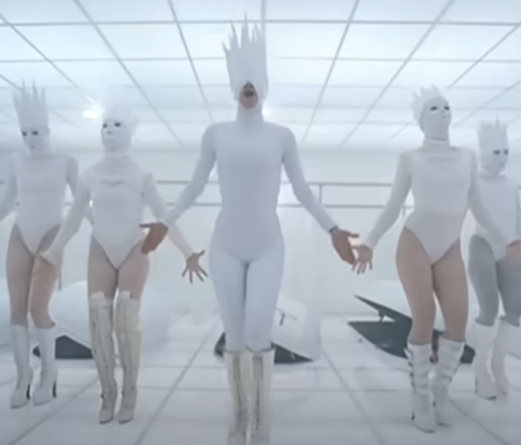

テーマ：所有／被所有の反転
施設のような白い空間、奇形的ファッション、突然の“販売”。被写体=商品という視線を逆手に取り、最後に“燃やす”カタルシスで所有関係を切断。
- 色彩：白の実験室 → 赤のカタルシス。
- カメラ：群舞は広角／密着ショットで欲望の“近さ”を強調。
- 小道具：スパイク・骨格シルエット=人間/商品の境界。
“曲の力” を “映像の文法” で増幅する——ガガのMVは、ファッション/振付/カメラ/色彩/プロップすべてが物語の部品。代表作をショット単位の視点で。
施設のような白い空間、奇形的ファッション、突然の“販売”。被写体=商品という視線を逆手に取り、最後に“燃やす”カタルシスで所有関係を切断。
獄中→相棒と脱出→ロードムービー。“女の子同士”の連帯が、男性視線を無効化するパルプ・フィクション的世界。
“善の出生”と“悪の出生”を同時に描く創世譚。多様性の肯定を神話規模に拡大し、差別の言葉を祝祭へ変換。
色彩豊かな夢の国は、実は事故現場の心的防衛。終盤の“現実への接続”で、映像の符号が意味を持ち直す構造。
“雨＝涙/痛み/アルコール”を洗い流す儀式。ジョイントのダンスは、2人のヒストリーが交差する瞬間。
「笑って死にたい」というフレーズに込められたのは、愛の救済か、それとも破滅の共犯か。 欲望と崩壊、親密さと孤独がせめぎ合うラブソングであり、現代の“甘美な毒”を体現するMV。
「Disease」は肉体の病ではなく、欲望・孤独・不理解といった“社会的感染”を描く寓話的作品。
Gaga自身の葛藤を投影し、「家庭」「キャリア」「愛」「孤独」といった普遍的なテーマを絡めることで、観客に「現代の病」を突きつける。
「MVは私の“論文”。衣装もカット割りも、全部が主張の一文。」— Lady Gaga